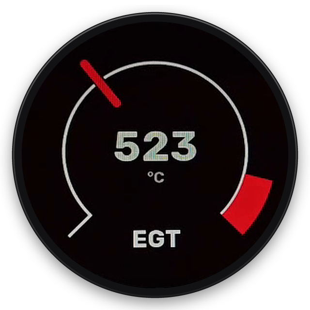
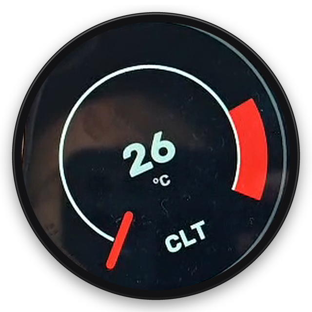
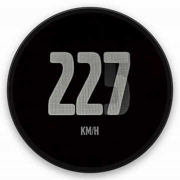
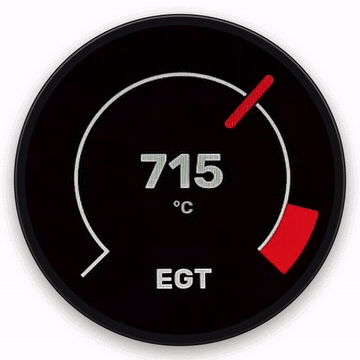
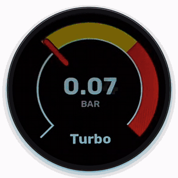

Volvo 740 · 940 · zestaw zegarów
Wskaźnik cyfrowy
Twój silnik na żywo, prosto w zestawie zegarów. Dane płyną bezprzewodowo ze sterownika ECUMASTER.
Gdzie się montuje
W zestawie zegarów, przed kierowcą.
- Wskaźnik cyfrowy w zestawie zegarów, obok prędkościomierza i obrotomierza.
Połączenie
Dane na żywo z Twojego sterownika ECUMASTER, bezprzewodowo.
Wskaźnik pobiera odczyty bezpośrednio ze sterownika silnika ECUMASTER w Twoim aucie. Dane trafiają bezprzewodowo ze sterownika do wskaźnika w zestawie zegarów.

W zestawie zegarów
Cały silnik w jednym spojrzeniu
Dwanaście odczytów. Jeden ekran.
- RPM
- Obroty silnika
- KM/H
- Prędkość jazdy
- BOOST
- Ciśnienie doładowania
- MAX B
- Maks. doładowanie
- AFR
- Skład mieszanki
- IAT
- Temp. powietrza dolotowego
- OIL
- Odczyt oleju
- CLT
- Temp. płynu chłodzącego
- EGT
- Temperatura spalin
- MAX C
- Maks. temp. płynu chłodzącego
- BAT
- Napięcie akumulatora
- TPS
- Położenie przepustnicy
Albo jedna duża liczba
Jeden odczyt na ekranie, duży i czytelny.
Zdjęcia i nagrania na żywo z działającego wskaźnika. Kliknij zdjęcie, aby je powiększyć.




W zestawie
Wskaźnik + instrukcja montażu
Wskaźnik cyfrowy
Do zestawu zegarów Volvo 740 i 940.
Szczegółowa instrukcja montażu
Krok po kroku, do samodzielnego montażu.
Do aut ze sterownikiem ECUMASTER. Wskaźnik odczytuje dane z tego sterownika, który nie jest częścią produktu.
Zamówienie
Zapytaj o wskaźnik cyfrowy
Cena na zapytanie. Wykonuje i sprzedaje Maciej Kalinka, w zestawie szczegółowa instrukcja montażu.
Cena na zapytanie
Chcesz zamówić?
Dane kontaktowe wkrótce.